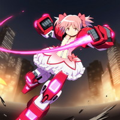
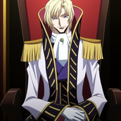
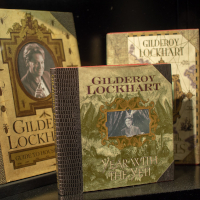
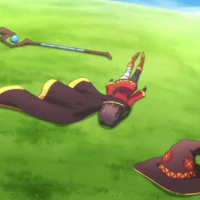

由良木 桔梗
ラブラビッツ
アズキ・マンチニール
江間 愛
エディプス・エレクトラ

ニムロド・Ｋ・Ｈ・ノア
三塚井 ドクロ
イーピン・カセイカ

ギルデロイ・ロックハート
オメルタ
この特性の②の効果は、セッション中に２度まで使用できる。
①：
あなたが暴走ロール及び臨界ロールを行う場合、同シーン中のランダムな１人（自分含む）に同ロールを行わせる事ができる。
※この効果で他ユニットが【発症】した場合、【解除パラ：運】【解除目標値：１４】の状態異常として扱う。
※この効果で他ユニットが【発症】した場合、【解除パラ：運】【解除目標値：１４】の状態異常として扱う。
②：
対抗判定時に発動できる。
相手の判定結果は自分とものと同じになる。その後、自分はもう１度判定をやり直す。
相手の判定結果は自分とものと同じになる。その後、自分はもう１度判定をやり直す。
１人が笑えば９９人が泣く。この世界はそういうものだ。
この特性の③の効果は、セッション中に１度しか使用できない。
①：
あなたが装備している【特殊武装/アーマー】は、通常の効果の代わりに以下の効果を適用する。
●他者から物理攻撃を受けた時、ダメージ判定ダイスの出目を、【６つ】まで【１】に置き換える。
効果を発動する度に、置換できるダイスの数が【１】ずつ減少する（下限【０】）。
●他者から物理攻撃を受けた時、ダメージ判定ダイスの出目を、【６つ】まで【１】に置き換える。
効果を発動する度に、置換できるダイスの数が【１】ずつ減少する（下限【０】）。
②：
あなたは【特殊武装/高周波ブレード】を装備する（圧迫スペックなし）。
この【高周波ブレード】の命中判定でファンブルした場合、そのファンブルロールは代わりに相手の回避判定に適用する。
この【高周波ブレード】の命中判定でファンブルした場合、そのファンブルロールは代わりに相手の回避判定に適用する。
③：
あなたが【AE/待機】を使用した同Ｒで、【特殊武装/高周波ブレード】と併用して宣言できる。
このアクション中、あなたはダメージ判定に【暴走率÷１０】分のダイスボーナスを得る。
この効果の使用後、セッション終了時まで、あなたは全ての特殊武装を使用できない。
このアクション中、あなたはダメージ判定に【暴走率÷１０】分のダイスボーナスを得る。
この効果の使用後、セッション終了時まで、あなたは全ての特殊武装を使用できない。
「不明なユニットが接続されました」
「システムに深刻な障害が発生しています。直ちに使用を停止してください」……
「システムに深刻な障害が発生しています。直ちに使用を停止してください」……
①：
あなたはカルマ【恋愛】を得る。
②：
あなたとそのクリーチャーが他のユニットに【AE/エール】を使用する場合、
その効果は倍になる。
その効果は倍になる。
恋の成就には献身が必要だ。だが愛の犠牲になってはいけない。
①：
あなたの応用技《ヒガンバナの餞》を設置する場合、PPとプリアクションを消費しなくて良い。
この効果で設置したトラップは解放できず、任意解除もできない。
この効果で設置したトラップは解放できず、任意解除もできない。
②：
あなたが攻撃発動を含まない継続ダメージ攻撃を行う場合、その命中判定は自動成功となる。
その美貌に、呼吸さえ忘却する。

○：
あなたがSOロールを行う場合に発動できる。その結果は【制御成功】となる。
この効果を発動したポストアクション後、あなたは次ラウンドの手番まで【疲労】し、
あらゆるAEを宣言できない。
この効果を発動したポストアクション後、あなたは次ラウンドの手番まで【疲労】し、
あらゆるAEを宣言できない。
ツァーリ・ボンバが旦那なら、彼女はきっと良い奥さんになるだろう。
①：
あなたがダメージロールのない宣言を行う場合、その命中判定は【＋２ｄ】のボーナスを得る。
②：
あなたに操作されているユニットが【貫通無効】状態でない場合、
そのユニットの装甲値は【０】になる。
そのユニットの装甲値は【０】になる。
「愛」とは、相手を無批判に受け入れる事。
①：
あなたは【AE/瞬殺】を【話術】で判定できる。
②：
バトル開始時に宣言できる。
このラウンド中、あなたが敵に与える全てのダメージは【０】となり、能力精度は倍になる。
このラウンド中、あなたが敵に与える全てのダメージは【０】となり、能力精度は倍になる。
相手が誰であろうとも、話せばきっとわかりあえる。
①：
あなたが創造するクリーチャー【エスカリボルグ】は【SPE/共鳴】を得る。
②：
あなたが【AE/行動放棄】を使用する場合、その効果に以下を追加する。
●あなたの【SPE/愛：②】の使用回数をリセットする。
●あなたの【SPE/愛：②】の使用回数をリセットする。
私の愛を受け取って。
あなたの命には大きすぎるかもしれないけど。
あなたの命には大きすぎるかもしれないけど。
①：
あなたが戦闘可能状態である限り、あなたとその味方ユニットはテリトリーによる判定ペナルティを受けない。
（付与そのものは無効にしない）
（付与そのものは無効にしない）
②：
あなたが命中判定に成功した場合に発動する。
そのユニットに付与されているテリトリーによる判定ボーナスを、エンドフェイズまで無効にする。
そのユニットに付与されているテリトリーによる判定ボーナスを、エンドフェイズまで無効にする。
鉛色の雲が空を覆ったとしても、神の眼は我らを見守っている。
①：
あなたは【K/英雄】を得る。
この効果で取得した【K/英雄】は【観察眼】【話術】【威圧】【読心】にしか使用できない。
この効果で取得した【K/英雄】は【観察眼】【話術】【威圧】【読心】にしか使用できない。
②：
あなたがSE【ブレイク】を使用する場合、
代わりに以下の効果を適用することもできる。
●【忘我】【記憶異常】【精神異常】の内、いずれか１つを選ぶ。
次の対象ポストアクション終了時まで、対象はその症状を発症する。
このセッション中、この特性の効果で同じ症状を選択できない。
代わりに以下の効果を適用することもできる。
●【忘我】【記憶異常】【精神異常】の内、いずれか１つを選ぶ。
次の対象ポストアクション終了時まで、対象はその症状を発症する。
このセッション中、この特性の効果で同じ症状を選択できない。
一度聞けば忘れられない偉業を、画面の前の君にだけこっそりお伝えしよう。
①：
あなたがAEでPPを消費する場合、その消費量を【－４】することができる（最低値０）。
この効果はセッション中に、【この特性のレベル】回まで使用できる。
この効果はセッション中に、【この特性のレベル】回まで使用できる。
②：
あなたが単体攻撃の回避判定に失敗した場合、リザルト前に使用できる。
この特性のレベルを任意の数値（最低値【0】）だけ消費し、そのダメージ判定に【消費レベル×５】点のペナルティを与える。
この効果を適用してダメージ判定結果が【0】を下回った場合、その攻撃は無効になったものとして扱う。
（元々ダメージ判定がない攻撃についても同様に処理する）
この特性のレベルを任意の数値（最低値【0】）だけ消費し、そのダメージ判定に【消費レベル×５】点のペナルティを与える。
この効果を適用してダメージ判定結果が【0】を下回った場合、その攻撃は無効になったものとして扱う。
（元々ダメージ判定がない攻撃についても同様に処理する）